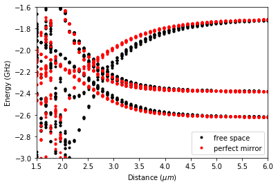

2.2.7. Rydberg Pair Potentials Near Surfaces¶
This tutorial is based on results that were published by J. Block and S. Scheel, “van der Waals interaction potential between Rydberg atoms near surfaces” Phys. Rev. A 96, 062509 (2017). We will reproduce the pair potentials shown in Figure 4. The final result is that for states around the \(|70p_{3/2};70p_{3/2}\rangle\)-asymptote of Rubidium the strength of the pair interaction is reduced when placing the atoms in front of a perfect mirror (perfectly conducting plate) compared to the vacuum interaction.
As described in the introduction, we start our code with some preparations and load the necessary modules.
[1]:
%matplotlib inline
# Arrays
import numpy as np
# Plotting
import matplotlib.pyplot as plt
from itertools import product
# Operating system interfaces
import os
import sys
# Parallel computing
from multiprocessing import Pool
# pairinteraction :-)
from pairinteraction import pireal as pi
# Create cache for matrix elements
if not os.path.exists("./cache"):
os.makedirs("./cache")
cache = pi.MatrixElementCache("./cache")
The plate lies in the \(xy\)-plane with the surface at \(z = 0\). The atoms lie in the \(xz\)-plane with \(z>0\).
We can set the angle between the interatomic axis and the z-axis theta and the center of mass distance from the surface distance_surface. distance_atom defines the interatomic distances for which the pair potential is plotted. The units of the respective quantities are given as comments.
Be careful: theta = np.pi/2 corresponds to horizontal alignment of the two atoms with respect to the surface. For different angles, large interatomic distances distance_atom might lead to one of the atoms being placed inside the plate. Make sure that distance_surface is larger than distance_atom*np.cos(theta)/2.
[2]:
theta = np.pi / 2 # rad
distance_atom = np.linspace(6, 1.5, 50) # µm
distance_surface = 1 # µm
Next we define the state that we are interested in using pairinteraction’s StateOne class . As shown in Figures 4 and 5 of Phys. Rev. A 96, 062509 (2017) we expect large changes for the \(C_6\) coefficient of the \(|69s_{1/2},m_j=1/2;72s_{1/2},m_j=1/2\rangle\) pair state, so this provides a good example.
We set up the one-atom system using restrictions of energy, main quantum number n and angular momentum l. This is done by means of the restrict... functions in SystemOne.
[3]:
state_one1 = pi.StateOne("Rb", 69, 0, 0.5, 0.5)
state_one2 = pi.StateOne("Rb", 72, 0, 0.5, 0.5)
# Set up one-atom system
system_one = pi.SystemOne(state_one1.getSpecies(), cache)
system_one.restrictEnergy(
min(state_one1.getEnergy(), state_one2.getEnergy()) - 50,
max(state_one1.getEnergy(), state_one2.getEnergy()) + 50,
)
system_one.restrictN(
min(state_one1.getN(), state_one2.getN()) - 2,
max(state_one1.getN(), state_one2.getN()) + 2,
)
system_one.restrictL(
min(state_one1.getL(), state_one2.getL()) - 2,
max(state_one1.getL(), state_one2.getL()) + 2,
)
The pair state state_two is created from the one atom states state_one1 and state_one2 using the StateTwo class.
From the previously set up system_one we define system_two using SystemTwo class. This class also contains methods set.. to set angle, distance, surface distance and to enableGreenTensor in order implement a surface.
[4]:
# Set up pair state
state_two = pi.StateTwo(state_one1, state_one2)
# Set up two-atom system
system_two = pi.SystemTwo(system_one, system_one, cache)
system_two.restrictEnergy(state_two.getEnergy() - 5, state_two.getEnergy() + 5)
system_two.setAngle(theta)
system_two.enableGreenTensor(True)
system_two.setDistance(distance_atom[0])
system_two.setSurfaceDistance(distance_surface)
system_two.buildInteraction()
Next, we diagonalize the system for the given interatomic distances in distance_atom and compare the free space system to a system at distance_surface away from the perfect mirror. The energy is calculated with respect to a Rubidium \(|70p_{3/2},m_j=3/2;70p_{3/2},m_j=3/2\rangle\) two atom state, defined in energyzero.
[5]:
# Diagonalize the two-atom system for different surface and interatomic distances
def getDiagonalizedSystems(distances):
system_two.setSurfaceDistance(distances[0])
system_two.setDistance(distances[1])
system_two.diagonalize(1e-3)
return system_two.getHamiltonian().diagonal()
if sys.platform != "win32":
with Pool() as pool:
energies = pool.map(
getDiagonalizedSystems, product([1e12, distance_surface], distance_atom)
)
else:
energies = list(
map(getDiagonalizedSystems, product([1e12, distance_surface], distance_atom))
)
energyzero = pi.StateTwo(
["Rb", "Rb"], [70, 70], [1, 1], [1.5, 1.5], [1.5, 1.5]
).getEnergy()
y = np.array(energies).reshape(2, -1) - energyzero
x = np.repeat(distance_atom, system_two.getNumBasisvectors())
[6]:
# Plot pair potentials
fig = plt.figure()
ax = fig.add_subplot(1, 1, 1)
ax.set_xlabel(r"Distance ($\mu m$)")
ax.set_ylabel(r"Energy (GHz)")
ax.set_xlim(np.min(distance_atom), np.max(distance_atom))
ax.set_ylim(-3, -1.6)
ax.plot(x, y[0], "ko", ms=3, label="free space")
ax.plot(x, y[1], "ro", ms=3, label="perfect mirror")
ax.legend()
plt.show()
